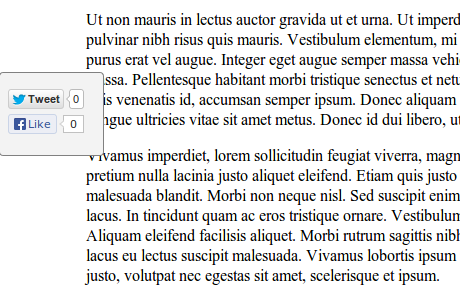

Help Me Share
Table of Contents
1 Description
Help Me Share is a small javascript utility which adds Share buttons for various services, i.e. twitter and facebook.
It embedded the native twitter and facebook buttons and does not use any intermediary. As a result the sharing statistics are not given away to any third-party except to the service that user clicked.
1.1 Features
- Each supported sharing service has a plugin.
- Currently there are only twitter and facebook plugins.
- You can decide which plugins to use.
- You can specify various configuration options for the plugins.
2 Rationale
There is a lot of sharing services one may what to use. It is troublesome
to include all the buttons you may want manually. Hence, the project. You
need include one <div>, the javascript and call a function which will
create the buttons you want.
It is intended as a facility to simplify embedding and configuring third party sharing services on your website.
It is worth noting that there are some alternatives, most notably
Share This.
One feature that differentiate Help Me Share is that it uses the
sharing services directly. For instance, if your user clicks on the Like
button the request will go directly to facebook. There are no other
intermediaries to gather your visitors data.
Please see an example or go straight to the quickstart.
3 Example

Example 1. Custom style (taken from http://igor.kupczynski.info/).
An example of a custom style, live demo at http://igor.kupczynski.info/.
4 Quickstart
- Grab the mimified java script at: https://raw.github.com/puszczyk/help-me-share/master/resources/stable/hms.min.js
- Put the following tag in the place where you want the buttons to show:
<div id="hms-container"></div>
- Include the script near the end of your page, e.g. just before the
closing
</body>tag and configure the options.<script src="js/hms.js"></script> <script> help_me_share.core.init( 'hms-container', {'twitter-via': 'test-user'} ); </script>
The function
help_me_share.code.initdoes the job of creating buttons. It needs two arguments:- Id of the container,
- Map of configuration options.
For quickstart it is sufficient to give your twitter account name.
- Style the container.
You need either to provide your own style or use one of the defaults. The defaults can be downloaded from the following locations:
- https://raw.github.com/puszczyk/help-me-share/master/resources/public/css/hms.css
- https://raw.github.com/puszczyk/help-me-share/master/resources/public/css/hms-fixed.css
And then included on the page within the meta tag:
<link rel="stylesheet" type="text/css" href="css/hms.css"/>
5 Configuration
TODO
6 Development
TODO
7 Default Styles
7.1 Example A

Example 2. Default style - embedded on a page.
Default style - button are embedded on a fixed position in relation to the site content.
7.2 Example B

Example 3. Default style - floating on the left.
Alternative style - buttons are on the a fixed position in relation to the browser frame and appear to be floating over the site content.
8 Contributions
We are on EPL, please feel free to fork this repository and contribute. You can also raise any issues or suggest improvements though the issues interface https://github.com/puszczyk/help-me-share/issues.